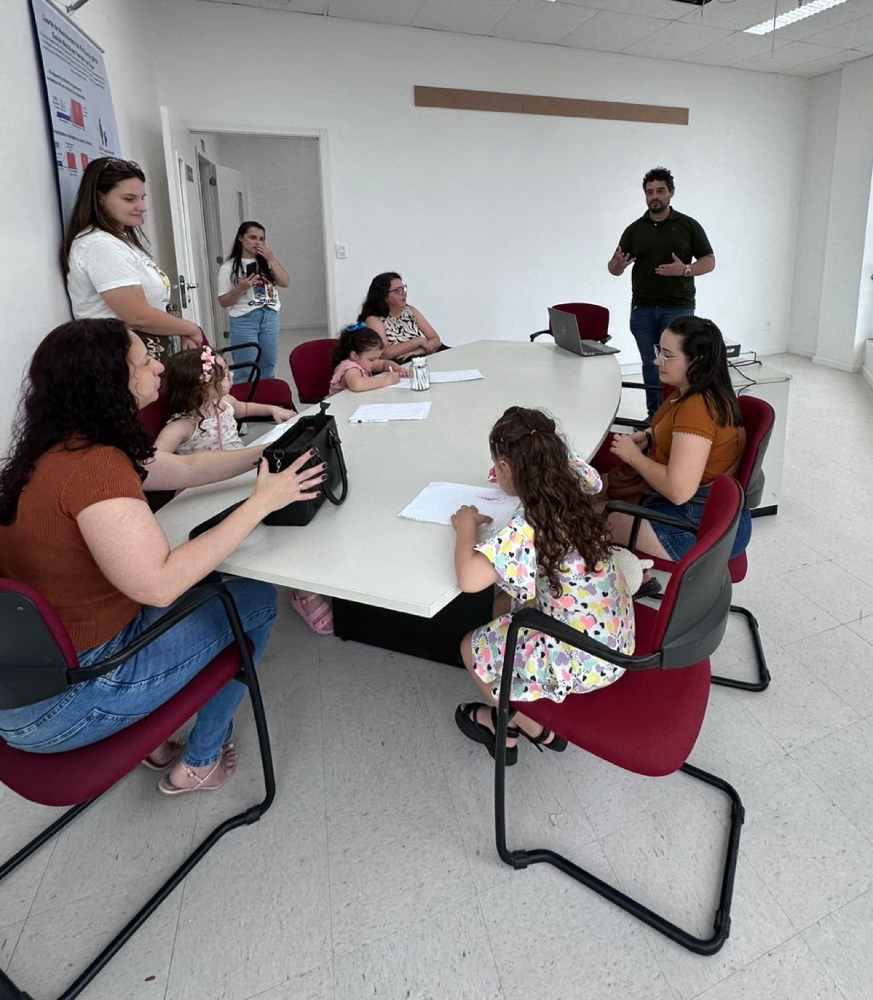

Pesquisa que começa nas pessoas.
Investigamos como experiências sociais, familiares e ambientais moldam a saúde ao longo da vida.
GPIS · FURG · Rio Grande, BrasilEpidemiologia · Saúde mental · Curso de vida · Inteligência artificial
Linha do tempo da Coorte de Nascimentos Rio Grande 2019
O que conecta nossos projetos
Perguntas diferentes, uma mesma ideia: acompanhar vidas reais e produzir conhecimento que faça diferença para elas.
Projetos
Pesquisa em andamento, construída sobre uma coorte que acompanha famílias desde o nascimento.
Coorte de Nascimentos Rio Grande 2019
Acompanhamos mães, crianças e famílias desde o nascimento.
Conheça a Coorte- 2.313
- entrevistas perinatais em 2019
- 6 anos
- no acompanhamento atual
Visões do Cuidado
Epidemiologia e IA para estudar saúde mental entre gerações.Enchentes e saúde mental
Como as enchentes de 2024 se relacionaram com a saúde mental de famílias que já acompanhávamos.Visão em primeira pessoa & IA
Câmeras vestíveis para observar interações familiares no cotidiano.Linkage e dados populacionais
Registros administrativos ligados a dados longitudinais, com governança.
Rede científica em quatro países
A pesquisa cresce quando diferentes perspectivas se encontram. Construímos projetos com parceiros no Brasil e em outros países.
- BrasilFURG
- Reino UnidoManchester Metropolitan University
- ChileUniversidad del Desarrollo
- PeruUniversidad Científica del Sur

Queremos fazer cada vez mais pesquisa com as pessoas, e não apenas sobre elas.
Pesquisa que não termina na publicação.
Queremos que o conhecimento circule — e volte a quem torna a pesquisa possível.
Formação de estudantes dentro de projetos reais.
Perguntas e métodos construídos com parceiros de quatro países.
Compromisso com resultados que circulem além da publicação científica.
Quem faz a pesquisa acontecer
Pesquisadores, pós-graduandos e estudantes de iniciação científica.
Contato
Estamos abertos a colaborações científicas, projetos conjuntos e parcerias com pesquisadores, estudantes e instituições.
Universidade Federal do Rio Grande — FURG
Rio Grande, RS, Brasil